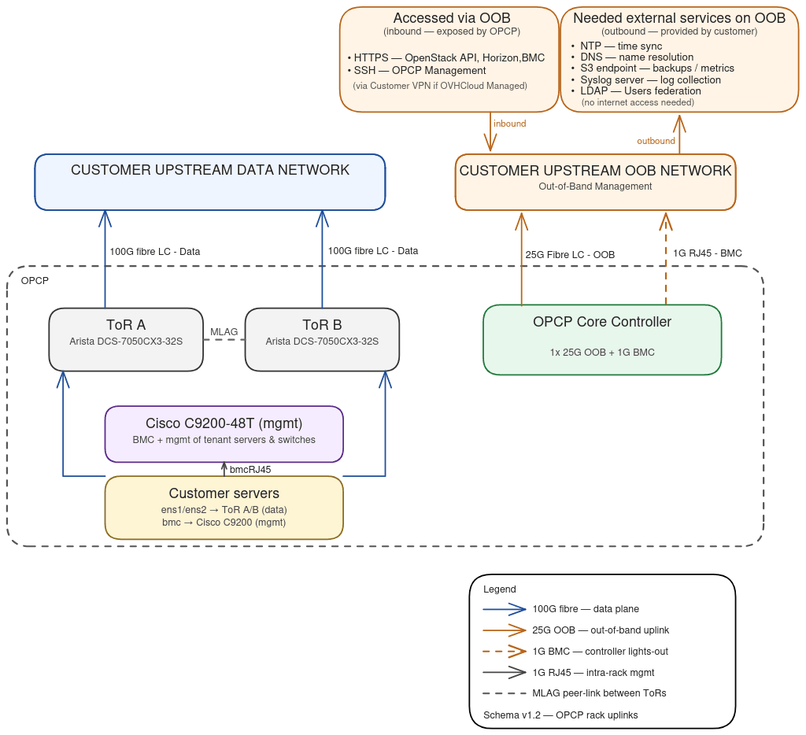
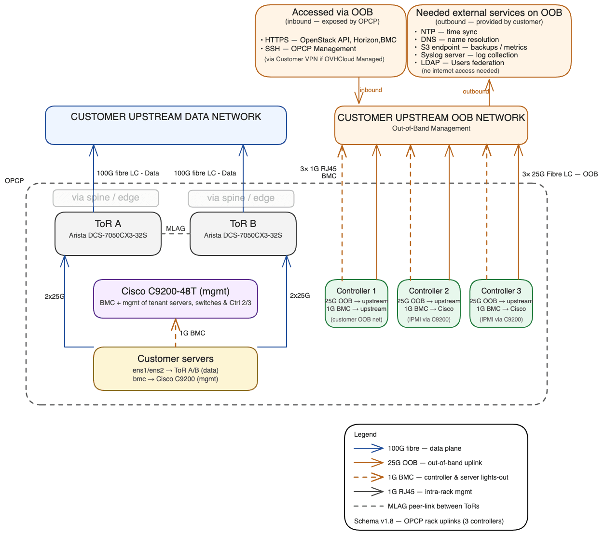

Network Architecture
IntermediateUnderstanding OPCP Network Architecture
On Premise Cloud Platform (OPCP) is delivered as an integrated stack (servers, switches, automation, control plane) installed directly at your premises. Before and during deployment, your team must understand how OPCP interconnects with your enterprise network: where it communicates, what flows it generates, and what services it consumes from your infrastructure.
OPCP relies on a strict separation between two networks with very different roles, equipment, and uses:
- The Data Network (data plane) — carries your workload traffic
- The Administration Network (Out-of-Band, OOB) — used to manage the platform itself
This separation is fundamental: it determines the security, resilience, and quality of service of the platform.
Air-gap capable: OPCP is designed to operate without any internet access. All expected destinations are services within your own information system.
Management Levels
OPCP is offered in two delegation levels. The level chosen determines who operates the control plane and therefore which interconnection flows must be opened towards OVHcloud.
| Mode | Platform Administration | Day-to-day Operations | IPsec Link to OVHcloud |
|---|---|---|---|
| Self-managed | Customer | Customer | No |
| Fully managed by OVHcloud | OVHcloud | OVHcloud | Yes (IPsec) |
Regardless of the mode, you remain responsible for everything you deploy on top of OPCP services: virtual machines, containers, bare-metal instances, applications, business data, and application backups.
The Data Network (Data Plane)
The data network is the network used by workloads hosted on OPCP servers (virtual machines, containers, bare-metal instances exposed via OpenStack). It carries:
- Application traffic entering and leaving instances
- Communications between instances within OPCP
- Flows between OPCP and the rest of your information system (databases, internal services, end users)
Hardware Components
- Server data interfaces — connected to the Top-of-Rack switches
- Top-of-Rack (ToR) switches — redundant pair per rack (Arista DCS-7050CX3-32S)
- Edge switches (multi-rack deployments) — junction between OPCP's internal network and your upstream data network
- Spine switches (FABRIC mode) — interconnect ToRs across multiple racks
- Fibre uplinks — 40 GbE or 100 GbE towards your Customer Upstream Data Network
The data network is managed end-to-end by OPCP via OpenStack Neutron: creating a network, subnet, or security rule from Horizon or the API automatically propagates to the underlying switches.
The Administration Network (Out-of-Band, OOB)
The OOB network is the network through which OPCP manages itself and through which you (and, in Fully managed mode, OVHcloud teams) access the management interfaces. It is physically and logically separated from the data network. It carries:
- Access to OpenStack APIs, Horizon interface, and OPCP management tools (HTTPS)
- SSH access to OPCP Core Controllers (
opcp-cli,opcp-diagcommands) - Inter-controller exchanges for control plane resilience (state synchronisation, quorum election, VIP failover)
- Log and metrics collection sent from OPCP to your internal services
- Outgoing flows from OPCP to your infrastructure services (NTP, DNS, S3 backup, LDAP, syslog)
No cross-communication: No direct communication is possible between the data network and the OOB network from inside OPCP. Any cross-network communication must pass through your upstream network, leaving you in full control of security rules between the two domains.
Deployment Topologies
OPCP ships in three deployment modes, sized for different use cases. They differ mainly in the number of supported racks and control plane resilience.
| Mode | Use Case | Control Plane | Racks | Spine/Edge |
|---|---|---|---|---|
| NANOPOD | Demo, remote sites, non-resilient (offices, edge) | Non-resilient (1 controller) | 1 | No |
| MINIPOD | Compact resilient infrastructure | Resilient (3 controllers) | 2–3 | Edges only |
| FABRIC | Full datacenter deployment | Resilient (3 controllers) | 3–10+ | Spine + Edges |
NANOPOD — 1 Controller Setup

Key elements:
- Customer Servers — data interfaces connected to both ToR switches; BMC attached to the management switch
- ToR A / ToR B — redundant Top-of-Rack switches that carry the data network directly and uplink to your Customer Upstream Data Network (40/100 GbE fibre)
- Management switch (mgmt) — aggregates server BMCs and ToR management ports
- OPCP Core Controller — connected via OOB uplink (25/10 GbE) to your Customer Upstream OOB Network, plus a 1 GbE BMC port
Note: With a single controller, there is no control plane redundancy. A hardware failure on the controller interrupts platform administration (already-deployed workloads continue running). For production environments requiring high availability, use MINIPOD or FABRIC.
MINIPOD / FABRIC — 3 Controllers Setup

Differences from NANOPOD:
- 3 OPCP Core Controllers — each with a 25/10 GbE OOB uplink and a 1 GbE BMC link. A shared Virtual IP (VIP) is used to reach OpenStack APIs and Horizon regardless of which controller is active
- Edge switches — sit between the ToRs and your upstream network. Data network configuration is applied on edges (not on ToRs)
- Spine switches (FABRIC only) — interconnect multiple racks; megaspine layer for 10+ racks
Integration with Your Environment
OPCP integrates with two network domains that you provide and keep under your control:
Customer Upstream Data Network
Your production network. OPCP connects via fibre links from the ToR (NANOPOD) or edge switches (MINIPOD/FABRIC) at 40 or 100 GbE. The uplink configuration is managed by OPCP through an exposed API. Network content and segmentation are driven by OpenStack Neutron.
Customer Upstream OOB Network
The domain from which OPCP is administered. You must provide:
- A dedicated subnet for OPCP with a default gateway
- DNS resolution: a domain name delegated to OPCP (e.g.
*.opcp01.example.com) - Filtering rules allowing the flows described in the flow matrix
- Access to at least one NTP time source (mandatory)
Network Flows Matrix
All flows below use the OOB (administration) network. None use the data network.
Inbound Flows (You → OPCP)
| Source | Destination | Purpose | Port |
|---|---|---|---|
| Admin workstations | Controller VIP | OpenStack API, Horizon | TCP/443 |
| Administrators (Self-managed) | Controllers | SSH (opcp-cli, opcp-diag) | TCP/22 |
Outbound Flows (OPCP → You)
| Source | Destination | Purpose | Port | Required? |
|---|---|---|---|---|
| OPCP OOB | Your NTP servers | Time synchronisation | UDP/123 | Mandatory |
| OPCP OOB | Your DNS resolvers | External name resolution | UDP/53 | Optional |
| OPCP OOB | Your Syslog servers | Log centralisation | UDP or TCP/514 | Recommended |
| OPCP OOB | Your S3 endpoint | Infrastructure backup | TCP/443 | Recommended |
| OPCP OOB | Your Active Directory / IdP | LDAP identity federation | TCP/636 (LDAPS) | Optional |
OVHcloud Interconnection (Fully Managed Mode)
If you subscribed to the Fully managed by OVHcloud option, OVHcloud must be able to reach your OPCP administration network for remote operations and support. This uses an IPsec site-to-site tunnel with the following default parameters:
- IKEv2 only (IKEv1 not supported)
- Authentication: Pre-Shared Key (PSK)
- Encryption: AES-256
- Hash: SHA-256
- Diffie-Hellman group 14
- Perfect Forward Secrecy (PFS) enabled
Once the tunnel is established, OVHcloud teams access your OPCP only through this link — no direct internet access is ever opened to your platform.
Key Takeaways
- OPCP has two strictly separated networks: Data Network (workload traffic) and OOB Network (administration)
- No direct communication is possible between the two networks from inside OPCP — your upstream network controls all cross-network traffic
- Three deployment topologies exist: NANOPOD (1 rack, 1 controller), MINIPOD (2–3 racks, 3 controllers), FABRIC (3–10+ racks, 3 controllers with spine)
- The data network is managed by OpenStack Neutron and supports access, trunk (802.1Q), and QinQ (802.1ad) modes
- OPCP is designed for air-gap operation — no internet access is required
- In Fully managed mode, OVHcloud connects via an IPsec tunnel (IKEv2, AES-256) to your OOB network